ARIMA Simulation in R: The Complete Guide for R Programmers and Forecasters
Learn ARIMA simulation in R using arima.sim() and sarima.sim(). Step-by-step guide for R programmers and forecasters with code examples.
code
rtip
arima
simulation
timeseries
Author
Steven P. Sanderson II, MPH
Published
August 5, 2026
Keywords
Programming, ARIMA simulation in R tutorial, arima.sim function R example, simulate time series data R, ARIMA model R programming, sarima.sim R package astsa, AR MA ARIMA coefficients R, time series forecasting R, auto.arima R forecast package, ARIMA white noise simulation, seasonal ARIMA simulation R, simulate ARIMA residuals R, ARIMA model fitting R, random walk simulation R, ARIMA order p d q R, time series data generation R
Introduction
If you’ve ever needed to test a forecasting algorithm, validate a model, or simply teach time series concepts, ARIMA simulation in R is your secret weapon. Rather than waiting for real-world data, you can generate synthetic time series with known properties giving you full control over your experiments.
In this guide, I’m hoping you’ll learn everything from basic arima.sim() syntax to seasonal ARIMA simulation, custom error distributions, and model validation workflows. Let’s get started!
What Is an ARIMA Model?
ARIMA stands for AutoRegressive Integrated Moving Average. A non-seasonal ARIMA model can be written as:
The model argument takes a list with component ar and/or ma giving the AR and MA coefficients respectively .
Argument
Description
model
List specifying AR/MA coefficients and order
n
Number of observations to generate
rand.gen
Innovation generator function (default: rnorm)
n.start
Burn-in period length
sd
Standard deviation of innovations
Simulating AR, MA, and ARIMA Models
AR(1) Model
set.seed(123)sim_ar1 <-arima.sim(model =list(ar =0.7), n =200)ts.plot(sim_ar1, main ="Simulated AR(1) Process")
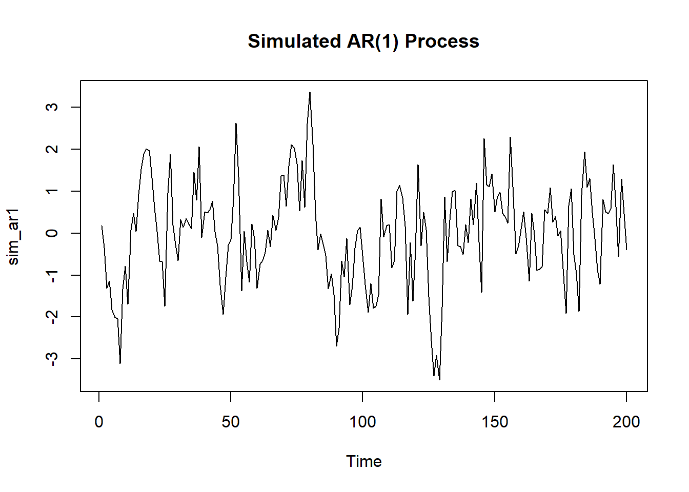
MA(1) Model
set.seed(123)sim_ma1 <-arima.sim(model =list(ma =0.5), n =200)ts.plot(sim_ma1, main ="Simulated MA(1) Process")
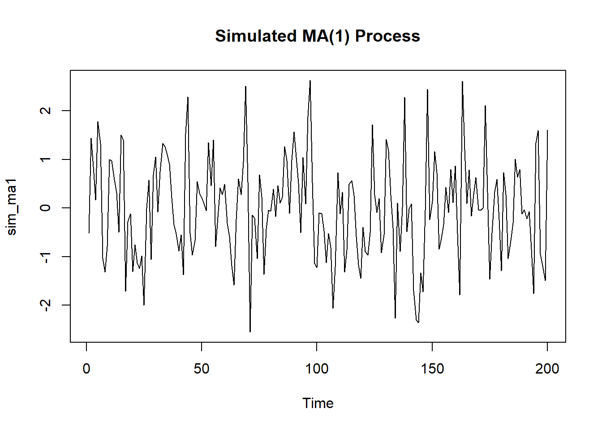
Full ARIMA(2,1,1) Model
set.seed(123)sim_arima <-arima.sim(model =list(order =c(2,1,1), ar =c(0.5, 0.3), ma =0.3), n =200)ts.plot(sim_arima, main ="Simulated ARIMA(2,1,1) Process")
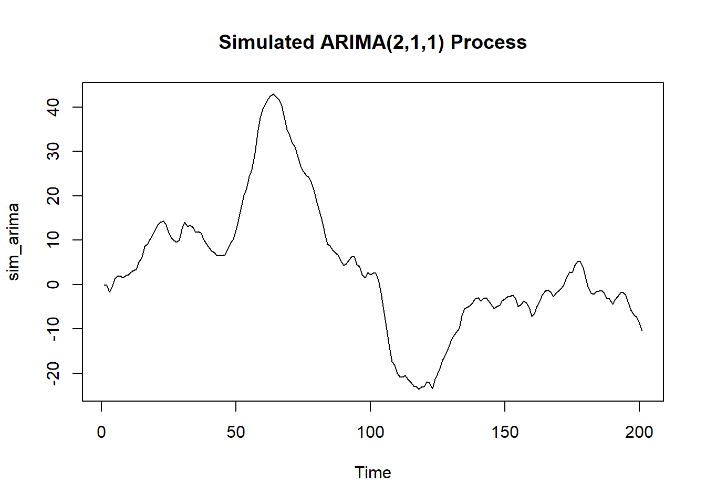
ARIMA(1,1,0) — Random Walk with Drift
A classic ARIMA simulation example from R’s official documentation :
ts.sim <-arima.sim(list(order =c(1,1,0), ar =0.7), n =200)ts.plot(ts.sim)
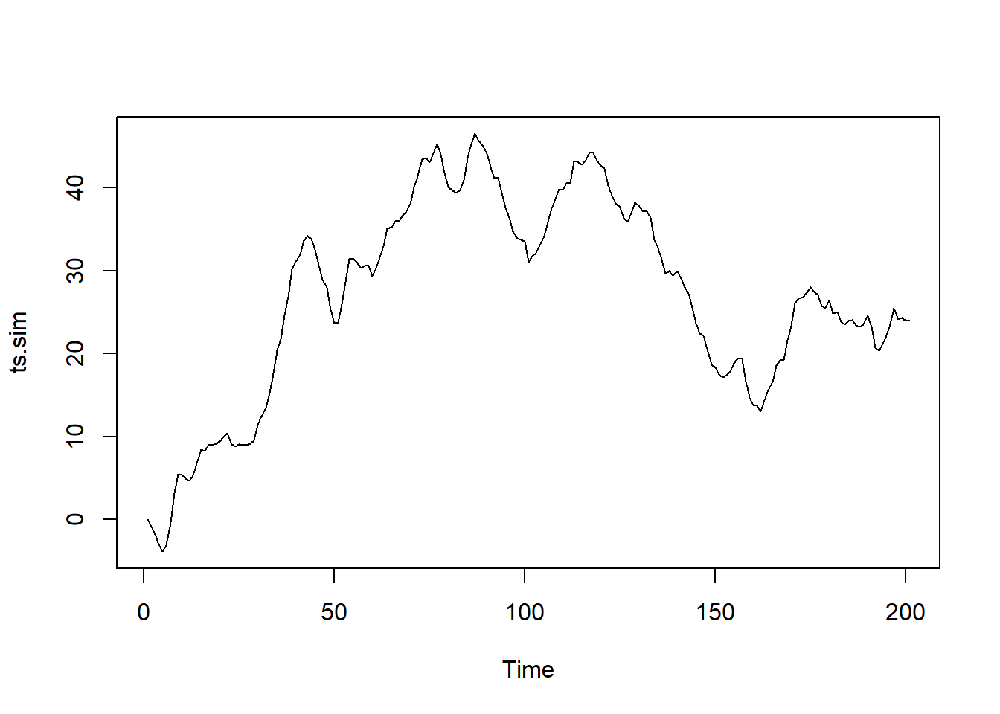
Custom Error Distributions
Beyond standard normal errors, arima.sim() supports custom distributions via rand.gen. For mildly long-tailed distributions using a t-distribution :
# Standard normal innovationsarima.sim(n =63, list(ar =c(0.8897, -0.4858), ma =c(-0.2279, 0.2488)),sd =sqrt(0.1796))
This can be useful when modeling financial or economic data that exhibits heavier tails.
Seasonal ARIMA Simulation with sarima.sim()
For seasonal models, the astsa package provides sarima.sim(). You can simulate a SARIMA(0,1,1)×(0,1,1)₁₂ model, the classic airline model, like this:
# Seasonal AR(1) with period 12sim_seasonal <-sarima.sim(sar =0.9, S =12, n =120)ts.plot(sim_seasonal, main ="Simulated Seasonal AR(1)")
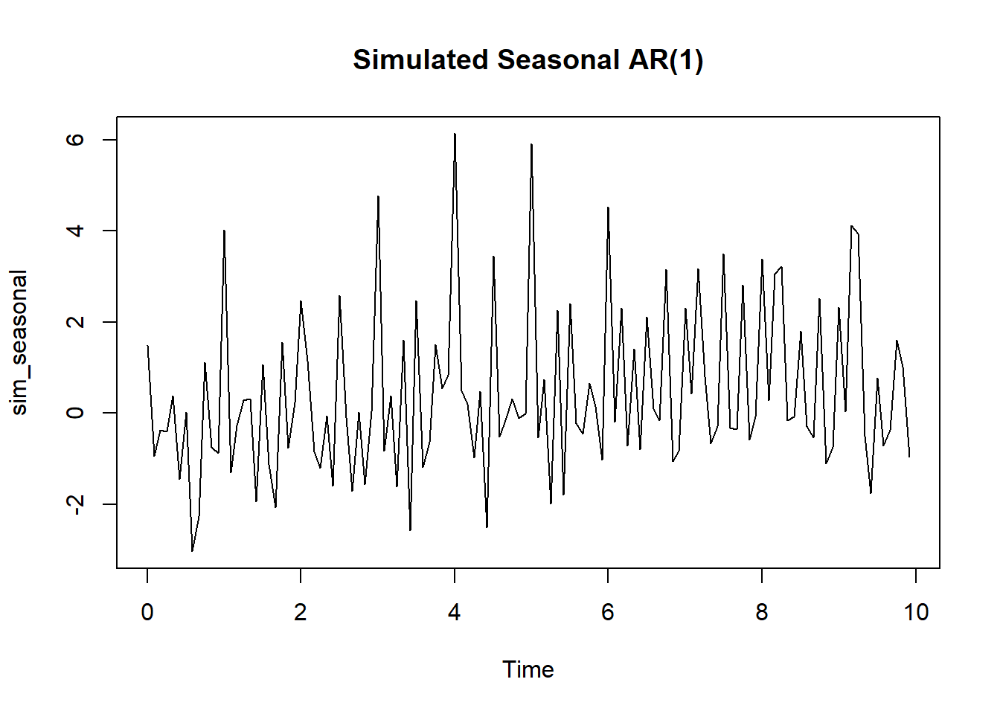
# Full airline model SARIMA(0,1,1)x(0,1,1)_12sim_airline <-sarima.sim(ma =-0.4, sma =-0.6, S =12, d =1, D =1, n =144)ts.plot(sim_airline, main ="Simulated Airline Model")
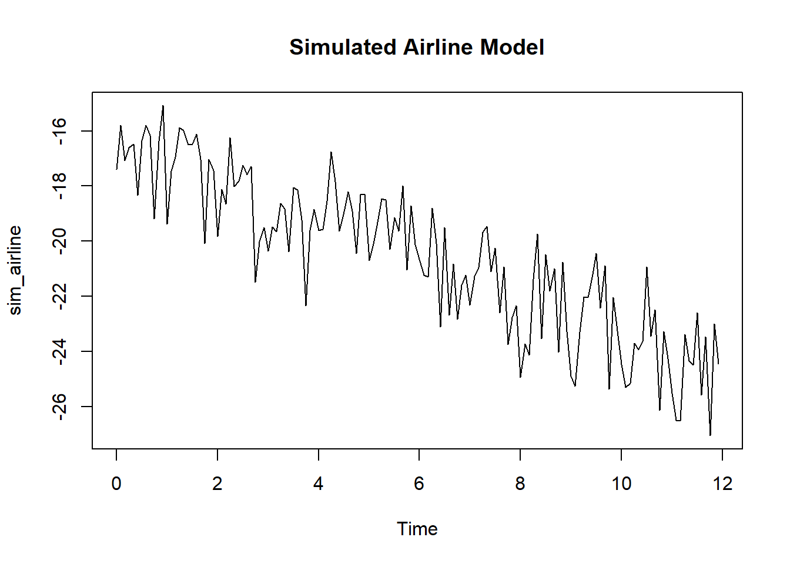
Fitting a Model to Simulated Data
A key workflow is simulating data, then fitting a model to verify parameter recovery:
set.seed(42)# Simulate ARMA(1,1)z <-arima.sim(n =200, model =list(ar =0.8, ma =-0.3))# Fit ARMA(1,1) modelarma11 <-arima(z, order =c(1, 0, 1), include.mean =FALSE)# Check residuals for serial correlationcheckresiduals(arma11)
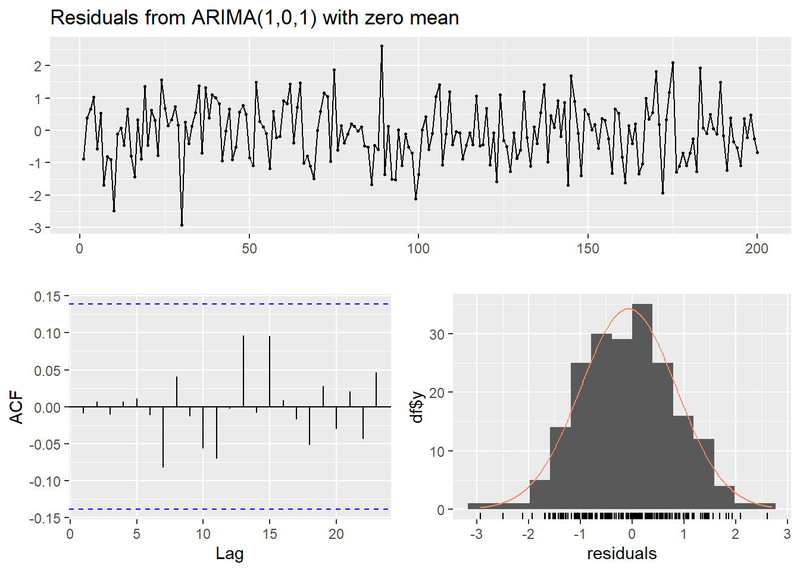
Ljung-Box test
data: Residuals from ARIMA(1,0,1) with zero mean
Q* = 2.5684, df = 8, p-value = 0.9585
Model df: 2. Total lags used: 10
If the model fits well, residuals should resemble white noise with no significant autocorrelation.
Using simulate() from the forecast Package
The forecast package offers an alternative simulate() method for Arima objects :
# Fit model to real datafit <-Arima(USAccDeaths, order =c(0,1,1), seasonal =list(order =c(0,1,1), period =12))# Simulate future pathssim_future <-simulate(fit, nsim =36)# Simulate model fit (future = FALSE for in-sample)plot(simulate(fit, future =FALSE), col ='red')lines(USAccDeaths)
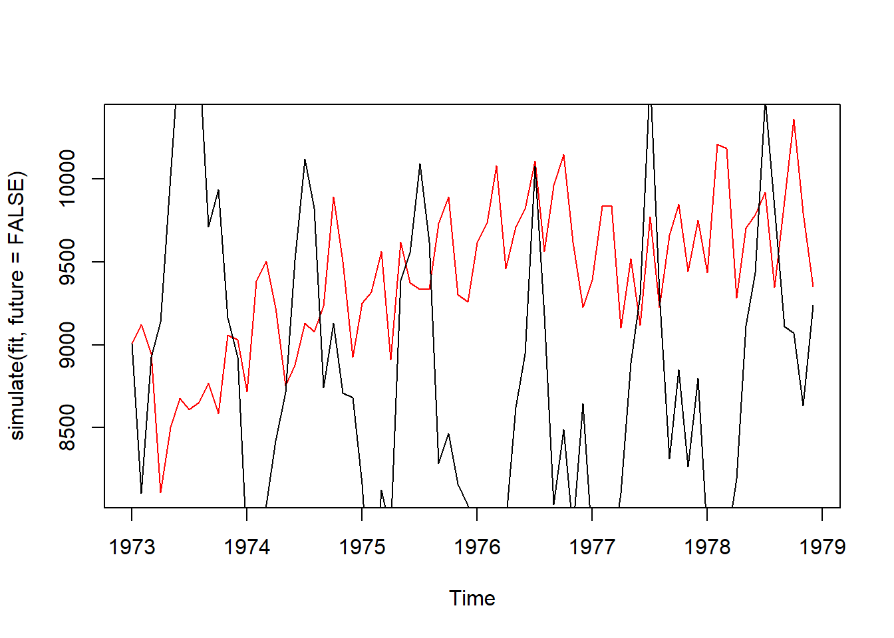
Setting future = FALSE is useful for examining how well the model fits your existing data .
Visualizing Simulated Time Series
Base R
ts.plot(sim_ar1, main ="AR(1) Simulation", ylab ="Value", col ="steelblue", lwd =1.5)
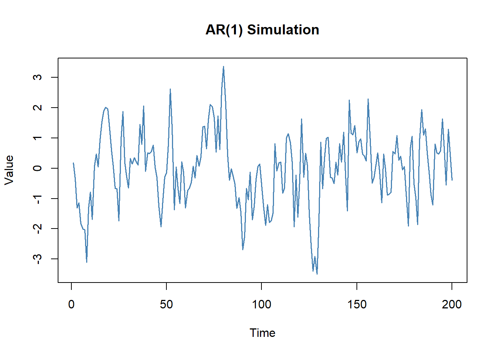
ggplot2
library(ggplot2)df <-data.frame(time =as.numeric(time(sim_ar1)), value =as.numeric(sim_ar1))ggplot(df, aes(x = time, y = value)) +geom_line(color ="steelblue", linewidth =0.8) +labs(title ="Simulated AR(1) Time Series",x ="Time", y ="Value") +theme_minimal()
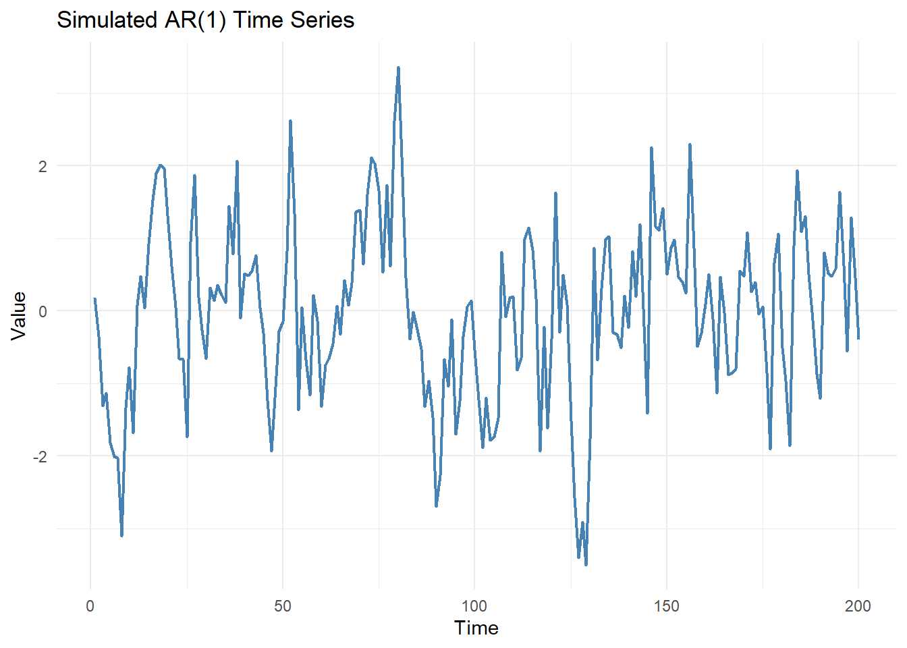
Common Mistakes and How to Avoid Them
❌ Mistake
✅ Fix
Forgetting set.seed()
Always set seed before simulation
Invalid AR/MA coefficients
Ensure stationarity/invertibility conditions are met
Ignoring burn-in period
Use n.start for stable initial conditions
Plotting raw vectors
Convert to ts object before plotting
Misspecifying order
Double-check c(p, d, q) matches your coefficients
🎯 Your Turn! Practical Exercise
Challenge: Simulate 150 observations from an ARIMA(1,0,1) process with AR coefficient 0.6 and MA coefficient 0.4. Plot the result using ggplot2 and fit an ARIMA model to recover the parameters.
💡 See Solution
set.seed(99)# Step 1: Simulate ARIMA(1,0,1)sim_101 <-arima.sim(model =list(order =c(1,0,1), ar =0.6, ma =0.4), n =150)# Step 2: Visualize with ggplot2library(ggplot2)df <-data.frame(time =as.numeric(time(sim_101)),value =as.numeric(sim_101))ggplot(df, aes(x = time, y = value)) +geom_line(color ="steelblue", linewidth =0.8) +labs(title ="Simulated ARIMA(1,0,1) Time Series",x ="Time", y ="Value") +theme_minimal()
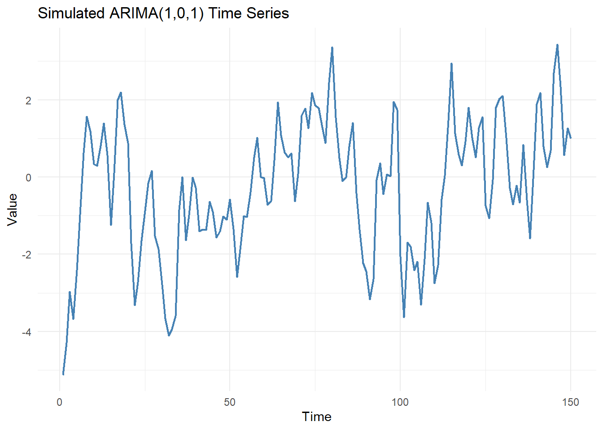
# Step 3: Fit model and check parameter recoveryfit <-arima(sim_101, order =c(1,0,1))print(fit)
arima.sim() from the stats package is the primary tool for ARIMA simulation in R
Always use set.seed() for reproducible results
Specify the model argument as a list with ar, ma, and order components
Use sarima.sim() from the astsa package for seasonal ARIMA simulation
Custom error distributions are supported via the rand.gen argument
The simulate() function from forecast works on fitted Arima objects
Fitting models to simulated data is a powerful validation technique
Conclusion
ARIMA simulation in R is a great skill for anyone interested in timeseries. R provides a rich toolkit: arima.sim(), sarima.sim(), and simulate(), to generate synthetic time series with the precision and flexibility you may need.
If you master these tools, you can validate models rigorously, benchmark forecasting algorithms, and build deeper intuition about time series and its associated dynamics. Start with the simple examples in this guide, then progressively explore more complex specifications.
❓ FAQs
1. What is the minimum R version required for arima.sim()?arima.sim() is part of R’s built-in stats package and has been available since R 1.0.0, so any modern R installation will include it.
2. Can arima.sim() simulate seasonal ARIMA models? No — arima.sim() does not support seasonal components. Use sarima.sim() from the astsa package for seasonal ARIMA simulation.
3. How do I ensure my AR coefficients are valid? For stationarity, the roots of the AR characteristic polynomial must lie outside the unit circle. For AR(1), this simply means |ar| < 1.
4. What’s the difference between arima.sim() and simulate() from forecast?arima.sim() generates data from scratch using specified parameters, while simulate() generates new observations from an already-fitted Arima model object .
5. How many observations should I simulate for reliable parameter recovery? Generally, n ≥ 200 observations provides stable parameter estimates. Shorter series may yield noisy coefficient estimates when fitting models.
💬 Engage!
Found this guide helpful? Drop a comment below! If this saved you time, please share it with your R community on LinkedIn, Twitter/X, or your favorite R forum. Your feedback helps us create better content for R programmers and forecasters like you!
@online{arima_simulation_in_r_the_complete_guide_for_r_programmers_and_forecasters_20260805, author = {Sanderson II MPH, Steven P.}, title = {ARIMA Simulation in R: The Complete Guide for R Programmers and Forecasters}, date = {2026-08-05}, url = {https://www.spsanderson.com/steveondata/posts/2026-08-05/}, langid = {en} }